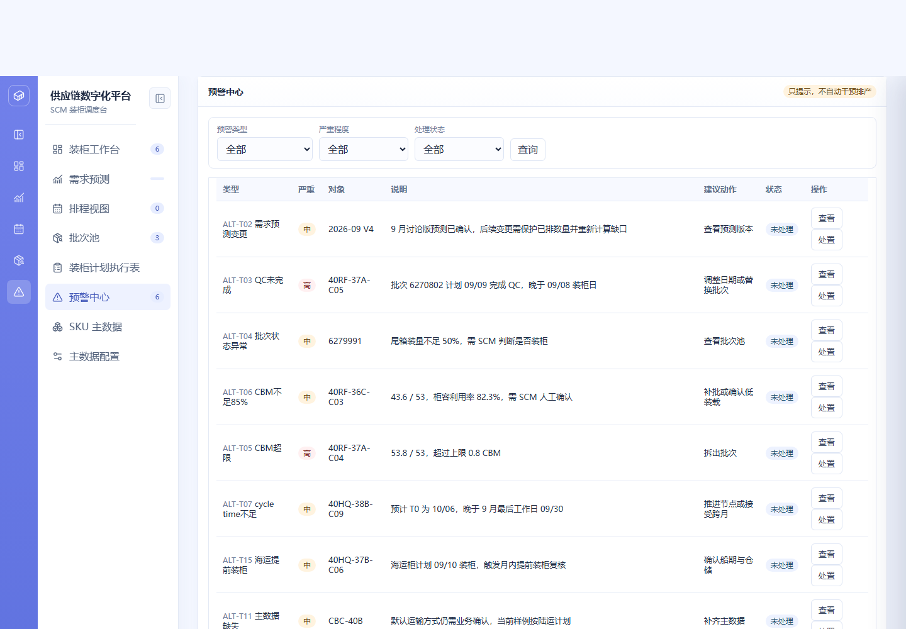
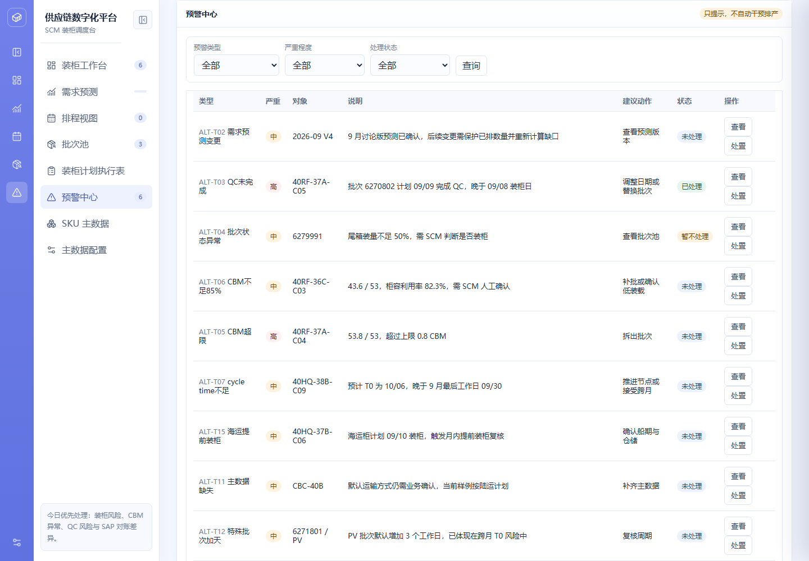

| 项目名称 | 供应链协同平台 | 模块 | 装柜计划 · 预警中心 |
|---|---|---|---|
| 需求名称 | 预警中心（15 类预警统一处理） | 负责人 | SCM 产品线 |
| 文档版本 | V1.1 | 状态 | 已确认 |
| 更新日期 | 2026-09-20 | 关联原型 | supply-chain-prototype.html（预警中心页） |
| 上游依据 | 《预警类型与案例确认清单》V1.1（2026-09-02，11 类确认采用、4 类修改后采用） | ||
| 版本 | 日期 | 变更说明 | 作者 |
|---|---|---|---|
| V1.0 | 2026-09-08 | 初版：15 类预警目录与分级、预警生成与去重、列表与筛选、查看跳转、处置闭环、只提示不干预原则 | SCM 产品线 |
| V1.1 | 2026-09-20 | 查询条件「预警类型」由单选下拉升级为多选：支持同行多选、全选 / 清空，多个类型之间为「或（OR）」关系；触发标签在多选时显示「已选 N 类」；工作台 CBM 风险卡跳转时自动勾选「CBM 超限」与「CBM 不足 85%」两类；更新埋点属性 | SCM 产品线 |
装柜计划横跨需求预测、批次 / QC、排程、执行与 SAP 对账多个环节，风险信息此前分散在各模块内，缺少统一的集中处理入口，容易出现风险漏看、重复提醒与处理不留痕。预警中心把 15 类已业务确认的预警（ALT-T01～T15）收敛为统一目录：每条预警必须能回到对应货柜、批次、SKU 或主数据；系统只提示和留痕，不自动取消货柜、不改写数量——需要阻断的规则（跨客户 / 跨目的地混装、CBM 超限发布、每日上限）在具体业务操作点直接阻断。
预警从生成、去重、展示到处置闭环的端到端流程见下方流程图（独立文件），关键分支为「查看跳转（按对象类型四分支）」与「处置确认（已处理 / 暂不处理原因必填）」。
下图为现有系统「预警中心」页面的真实运行截图（供应链数字化平台）——预警列表、筛选与操作：

处置后的列表示例（ALT-T03 标记「已处理」、ALT-T04 标记「暂不处理」，其余保持「未处理」）：

| 一级模块 | 二级功能 | 原型 | 描述 |
|---|---|---|---|
| 预警中心 | 预警列表与筛选 |
【页面元素】页面标题旁固定展示「只提示，不自动干预排产」原则标签；筛选区含「预警类型（15 类多选）」「严重程度（高 / 中 / 动态 / 低）」「处理状态（未处理 / 暂不处理 / 已处理）」与「查询」按钮；列表为 7 列表格：类型（编号 + 名称）、严重、对象、说明、建议动作、状态、操作。 【交互说明】「预警类型」为自定义多选组件：点击展开复选框列表（15 类，均可多选），面板顶部提供「全选」「清空」操作；选中项即时生效并刷新列表；触发标签展示规则——未选显示「全部类型」、已选 ≤ 2 类显示类型名称拼接（如「CBM超限、CBM不足85%」）、已选 > 2 类显示「已选 N 类」。其余条件选择后点「查询」刷新；每行提供「查看」「处置」两个操作按钮。 【功能逻辑】列表数据由规则实时推导生成，非静态快照；预警类型多选条件之间为「或（OR）」关系——命中任一已选类型的预警即展示；多选条件与严重程度、处理状态之间为「与（AND）」关系；未选择任何类型时等同于全部类型。严重程度标签分色：高（红）、中 / 动态（橙）、低（蓝）；处理状态标签分色：已处理（绿）、暂不处理（橙）、未处理（蓝）。 【数据与内容规则】类型列展示预警编号（ALT-T01～T15）便于与《预警类型与案例确认清单》对照；说明列展示触发原因与影响，建议动作列展示推荐处理路径。 |
|
| 预警生成与去重 |
【生成机制】两类来源：① 预警目录内的存量预警（保持对象引用，处理状态可持久化）；② 动态扫描生成，包括：下一需求月无有效已确认预测版本（ALT-T01）、同一装柜日未取消货柜数超过上限（ALT-T08）、柜内出现多个目的地（ALT-T09）、SAP 实际出库数量小于计划数量（ALT-T10）、人工改空运批次登记（ALT-T13）。 【去重规则】以「预警编号 + 业务对象」为去重键；同一键存在多条时仅保留等级最高的一条（等级权重：高 > 中 / 动态 > 低 / 信息），确保同一对象同一规则不重复堆叠。 【功能逻辑】每次刷新列表时重新推导，已生成的预警补齐编号与对象引用；处理状态在推导过程中原位保留，不因刷新丢失。 |
||
| 查看与跳转 |
【交互说明】点「查看」→ 按预警的业务对象类型自动跳转到对应模块。 【跳转规则】① 对象为货柜（或预警带货柜目标）→ 打开该货柜的编辑抽屉（排程视图）；② 对象为批次 → 跳转 SKU 待分配批次池；③ 对象为预测版本 / 预测类预警 → 跳转需求预测；④ 其余（主数据缺失、特殊批次加天等）→ 跳转主数据维护。跳转后以提示条告知落点。 【功能逻辑】每条预警必须能回到对应货柜、批次、SKU 或主数据——先按预警自带目标定位，无目标时按对象值在货柜、批次中反查，再按预警类型推断。 |
||
| 预警处置 |
【交互说明】点「处置」→ 弹出确认框「是否将该预警标记为已处理？」：确认 → 状态置为「已处理」；取消 → 弹出「请输入暂不处理原因」，原因必填（为空则提示「暂不处理必须填写原因」且不落库），填写后状态置为「暂不处理」并记录原因。 【功能逻辑】处置后立即刷新列表与工作台待处理计数；处理动作写入操作日志（含编号、类型、对象或原因），可追溯。 【文案规范】「是否将该预警标记为已处理？」「请输入暂不处理原因」「暂不处理必须填写原因」「预警已标记为已处理」「已记录暂不处理原因」为统一提示文案。 |
||
| 待办联动 |
【页面元素】左侧导航「预警中心」显示未处理角标；装柜工作台「今日优先处理」按执行风险、CBM、QC、库存差异排序展示待办，直达对应货柜、SKU 或批次。 【功能逻辑】预警处置后实时刷新角标与工作台待办；未处理预警按等级排序进入待办，保证最高风险最先被看到。装柜工作台「CBM 风险」卡点击跳转本页时，自动将「预警类型」多选置为「CBM超限」+「CBM不足85%」两类并刷新列表。 【数据与内容规则】待办排序依据：当天执行风险 > CBM 异常 > QC 风险 > 库存差异。 |
||
| 只提示不干预原则 |
【功能逻辑】预警中心只负责提示和留痕：不自动取消货柜、不改写数量、不静默排除批次。需要阻断的规则在具体业务操作点直接阻断（如：跨客户 / 跨目的地上架硬阻断、CBM 超限阻断保存与发布、每日上限阻断改期落位）。 【例外确认】CBM 利用率不高于 85% 的低装载预警，经 SCM 人工「确认低装载」后允许发布且不再提示；空运待人工处理（ALT-T13）默认不主动弹窗，仅列表登记。 |
以下 15 类预警已完成业务确认（11 类确认采用、4 类修改后采用），编号、等级、触发条件、建议处置与关闭条件与《预警类型与案例确认清单》V1.1 对齐。
| 编号 | 预警类型 | 等级 | 触发条件 | 建议处置 | 关闭条件 | 确认结果 |
|---|---|---|---|---|---|---|
| ALT-T01 | 需求预测未上传 | 动态 | 目标月份前一月 10 日前仍未出现目标月份有效预测版本 | 强预警提示预测负责人上传；不自动阻断计划 | 目标月份存在唯一有效预测版本 | 修改后采用（前一月 10 日前提示即可） |
| ALT-T02 | 需求预测变更 | 中 | 新启用版本与原预测或已排数量出现差异 | 保护式重新预排，确认缺口 / 盈余策略 | 所有差异行已确认并生成新计划快照 | 确认采用 |
| ALT-T03 | QC 未完成 / 晚于装柜 | 动态 | QC 计划或实际放行晚于计划装柜，或装柜日仍未放行 | 换批、改期或补录权威 QC 放行结果 | QC 不晚于门槛，或计划已调整 | 确认采用 |
| ALT-T04 | 批次不可排 / 状态异常 | 高 | 批次非可排、可用量不足、冻结、销毁或过期 | 替换批次、释放占用或修复上游状态 | 批次恢复可排且可用量覆盖计划，或从计划移除 | 确认采用 |
| ALT-T05 | CBM 超限 | 高 | 货柜 CBM 合计超过柜型有效上限 | 整箱拆批、下架、换柜型或申请例外 | CBM 回到上限内，或例外审批通过 | 确认采用 |
| ALT-T06 | CBM 低装载 | 中 | 0 < CBM / 柜型上限 ≤ 85% | 人工确认后不再提示，允许发布；未确认时提示补批或确认低装载 | CBM 利用率回到 85% 以上，或 SCM 已完成人工确认 | 修改后采用（触发口径为利用率 ≤ 85%） |
| ALT-T07 | 周期不足 / T0 跨月 | 动态 | 日期链计算的 T0 跨月或超出需求预测对应的计划窗口 | SCM 计划员手动调整装柜日期、运输方式或批次；系统展示计算结果和原因 | SCM 已完成调整并记录原因，或确认接受跨月 | 修改后采用（暂无客户承诺到达日期，按预测数量手动调整） |
| ALT-T08 | 每日装柜超限 | 中 | 同一装柜日未取消货柜数超过日资源上限（默认 5 柜） | 调整日期 / 时段、增加资源或申请例外 | 柜数回到上限内，或临时扩容已审批 | 确认采用 |
| ALT-T09 | 混装规则冲突 | 动态 | 不兼容柜型、目的地、客户白名单、温控或法规组合进入同柜 | 拆柜、换批或完成白名单授权 | 符合兼容矩阵，或有效授权完成 | 确认采用 |
| ALT-T10 | SAP 库存或出库对账差异 | 高 | SAP 可用量不足、实际出库与计划批次 / 数量不一致，或完成后发生冲销 | 刷新 SAP、核对替代批次、补录映射或回退完成状态 | 计划、实际批次和累计有效出库一致 | 确认采用 |
| ALT-T11 | 主数据缺失或失效 | 动态 | 件装量、每件 CBM、柜型、客户 / 目的地、运输方式或周期缺失 / 停用 | 跳转主数据维护并重新校验 | 必填字段完整有效且已重算 | 确认采用 |
| ALT-T12 | 特殊批次加工作日 | 中 | PV / CV 等特殊批次未计入额外工作日，或因此造成 T0 延期 | 重算周期，必要时改装柜日 / 运输方式 | 加工作日已计入且 T0 风险已处理 | 确认采用 |
| ALT-T13 | 空运待人工处理 | 低 / 信息 | 运输方式由 SCM 人工改为空运，且尚未完成空运计划 | 默认不提醒；仅在人工空运任务超过约定处理时限时提示 | 已建立空运计划，或完成取消 / 延期确认 | 修改后采用（默认不主动提醒，仅列表登记） |
| ALT-T14 | 执行信息缺失 | 动态 | 合同号、SO、船名、柜号、封条号等字段在规定节点仍为空 | 指定角色补录，记录来源和时间 | 当前节点要求字段完整且格式有效 | 确认采用 |
| ALT-T15 | 海运提前装柜 | 低 | 海运装柜早于业务建议窗口，例如当月 26 日前 | 确认船期 / 仓储，接受时填写原因或调整日期 | 船期与仓储已确认，或装柜日进入建议窗口 | 确认采用 |
| 等级 | 含义 | 默认处理 |
|---|---|---|
| 高 | 已影响质量、库存、执行、容量或客户承诺 | 工作台置顶；要求当日处理；必要时在操作点阻断 |
| 中 | 当前仍可执行，但可能导致延期、低装载或人工积压 | 在计划确认或装柜前处理 |
| 低 | 过程提醒或补充信息，不影响当前可行性 | 观察；临近关键节点可升级 |
| 动态 | 等级随距离装柜日、客户承诺、是否阻断而变化 | 系统显示升级原因和剩余时间 |
| 字段 | 说明 | 来源 | 必填性 |
|---|---|---|---|
| 预警编号 / 类型 | ALT-T01～T15 风险分类与优先级 | 系统规则 | 必填 |
| 业务对象 | 关联货柜、SKU、批次或预测版本 | 系统关联 | 必填 |
| 风险说明 | 触发条件和影响 | 系统计算 | 只读 |
| 严重程度 | 高 / 中 / 低 / 动态 | 预警目录 | 必填 |
| 建议动作 | 推荐处理路径 | 系统规则 | 只读 |
| 处理状态 / 原因 | 已处理或暂不处理及说明 | SCM 处置 | 暂不处理时原因必填 |
| 场景 | 处理 |
|---|---|
| 暂不处理原因为空 | 提示「暂不处理必须填写原因」，状态不变、不落库 |
| 同一对象同一规则重复触发 | 按「预警编号 + 业务对象」去重，仅保留等级最高一条，不重复堆叠 |
| 预警自动改计划 | 禁止：预警只提示和留痕，不自动取消货柜或改写数量 |
| 空运批次 | 默认不主动弹窗提醒，仅列表登记；长期未完成空运安排才提示 |
| 低装载确认 | CBM ≤ 85% 未确认时持续提示；人工确认后允许发布且不再提示 |
| 预测未上传 | 仅强提醒预测负责人，不自动阻断既有计划生成与执行 |
| SAP 出库小于计划 | 生成对账差异预警（高），处置路径为刷新 SAP 或核对批次 |
| 修改后采用的 4 类（T01 / T06 / T07 / T13） | 按页面提示执行；正式系统中需配置责任人、处理时限和审计字段后方可自动升级 |
| 预警类型多选未选任何项 | 等同于「全部类型」，不额外拦截 |
| 预警类型多选选中多项 | 按「或」关系取并集筛选；触发标签按规则显示名称拼接或「已选 N 类」 |
| 点击多选面板外部区域 | 自动收起多选面板，已选条件保留 |
| 事件名 | 触发时机 | 关键属性 |
|---|---|---|
| alert_list_query | 点击查询筛选预警列表 | 类型列表（数组）、严重程度、处理状态、结果条数 |
| alert_view_jump | 点击「查看」跳转 | 预警编号、对象类型、目标模块 |
| alert_resolve | 处置为已处理 | 预警编号、对象、等级 |
| alert_defer | 处置为暂不处理 | 预警编号、对象、原因长度（不留存原文于埋点） |
| alert_defer_blocked | 暂不处理原因为空被拦截 | 预警编号、对象 |
| alert_generated | 动态扫描生成新预警 | 预警编号、对象、等级、触发规则 |
| alert_type_multi_select | 变更预警类型多选（含全选 / 清空） | 已选类型列表、类型数量、操作（勾选/取消/全选/清空） |
| 阶段 | 内容 | 时间 |
|---|---|---|
| 一期 | 15 类预警目录与分级、生成与去重、列表与三维筛选（预警类型多选、严重程度、处理状态）、查看跳转、处置闭环（已处理 / 暂不处理原因必填）、操作日志留痕、待办联动 | 待确认 |
| 二期 | 责任人 / 处理时限 / 审计字段配置化、动态等级自动升级（距装柜日 / 客户承诺）、通知渠道接入、响应时长与误报率统计 | 待确认 |
| 术语 | 说明 |
|---|---|
| 预警编号 | ALT-T01～T15，与《预警类型与案例确认清单》V1.1 一一对应 |
| 动态等级 | 等级随距离装柜日、客户承诺、是否阻断而变化的预警（T01 / T03 / T07 / T09 / T11 / T14） |
| 去重键 | 「预警编号 + 业务对象」，同键仅保留等级最高一条 |
| 只提示不干预 | 预警中心不自动取消货柜、不改写数量；阻断类规则在具体业务操作点执行 |
| 操作点阻断 | 跨客户 / 跨目的地上架、CBM 超限发布、每日上限改期等在业务动作发生时直接拦截 |
| 保护式重新预排 | 预测版本变更后重排时保留既有货柜，只生成新增需求或缺口补量建议 |
| 预警类型多选 | 查询条件「预警类型」支持同时勾选多个类型，类型之间为「或」关系；支持全选 / 清空，触发标签按已选数量显示 |